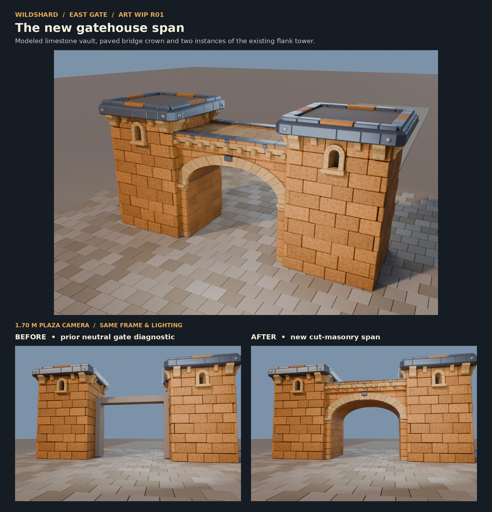
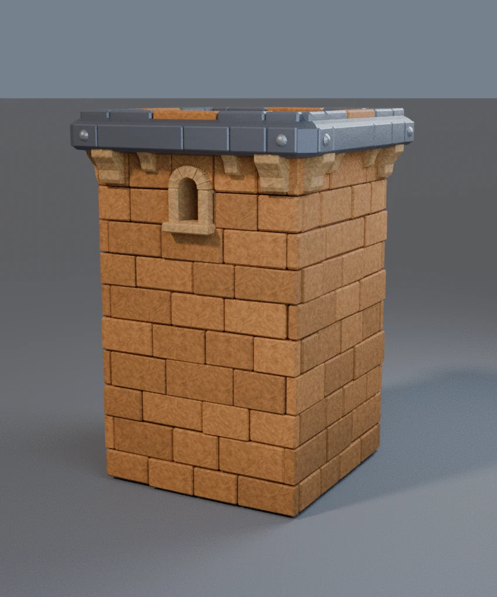
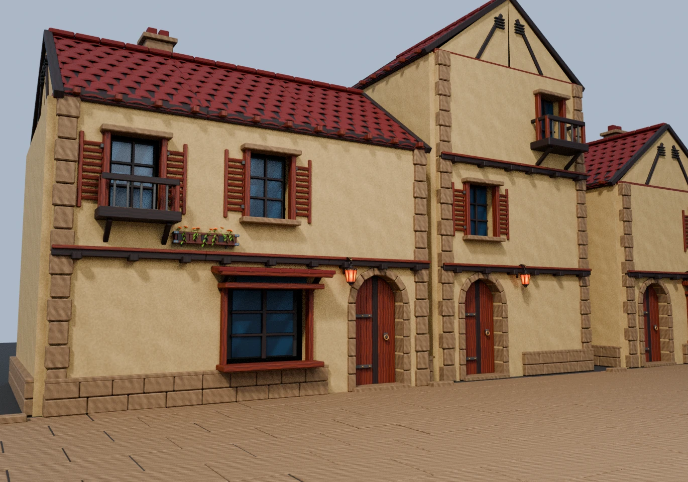
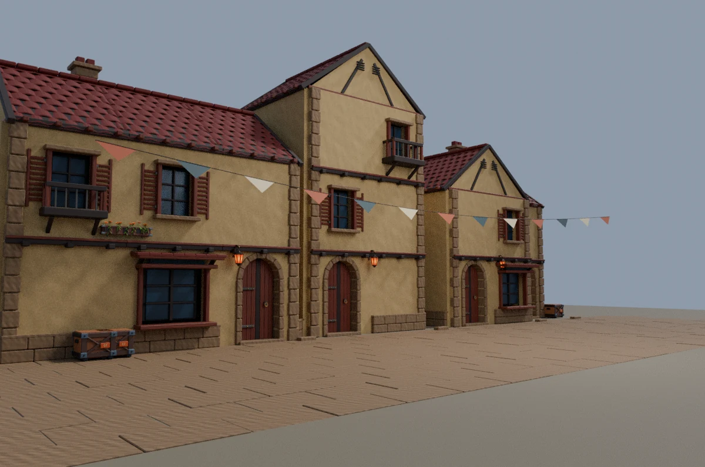

OpenAI Image Generation
Four-angle concepts
47 evidence-linked concept boards, not 3D assets. Five new provisional East actor boards cover Crate Mite, Pallet Jack, Plumb Drone, Welder Unit and Arc Sentry. They are visual design references only, not models or behavior specs. The three illustrated rail plan studies are separate and do not count as visual evidence. Three East yard boards study an E03 robot dock, a caged gooseneck lamp, and one straight section of low E07 pit lining. They are illustrative only: they do not establish mesh reuse, mounting or rear details, module seams, or collision. The hover boards study one historical W07 kicker and one orange course flag. They do not depict the current D7 geometry. Earlier boards cover the industrial seam gate post, one straight industrial wall bay, and a straight plaza inlay material swatch. They do not specify wall corners, collision, or a finished paving kit. The West grapple post studies a cyan hoop mounted on a post, distinct from the freestanding riding ring. The mover station board studies marker #2. Rear and mounting details on both boards are provisional. Tap a board to view it larger.
OpenAI Image Generation · W5c · Plan only
Hover park grind rail studies
Three illustrations for WSC-PLAN-009, one planned rail family. W5c specifies a level 12 m rail, a descending rail off the funbox, and a kinked rail into the bowl. The funbox and bowl are intentionally omitted from the images.
 Flat · 12 m straight, level rail. The length comes from the plan, not the image.
Flat · 12 m straight, level rail. The length comes from the plan, not the image. Down · Straight descent from the hypothetical funbox exit. Angle and length are illustrative.
Down · Straight descent from the hypothetical funbox exit. Angle and length are illustrative. Kink · One direction change toward the hypothetical bowl. The illustrated horizontal bend is a design hypothesis.
Kink · One direction change toward the hypothetical bowl. The illustrated horizontal bend is a design hypothesis.These are illustrative studies, not visual evidence, production geometry, or playable rails. Supports, cross-section, finish, elevation, joints, footing, non-flat lengths, slope, kink geometry, and placement are provisional. The boards do not validate catch radius, polyline, or corner behavior.
Provisional inventory
Asset catalog
158 working entries, including asset candidates, families, kits, and composites. Nine are plan-only entries. This is not a final count of unique models.
New Blender previews: East industrial props and West town props.
Hover park: D7 calls for launch walls instead of a true halfpipe and kicker heights of 2.4, 3.6 and 4.8 m. See the 2.4 m candidate and the newly authored 3.6 and 4.8 m candidates. The earlier progression diagnostic still shows temporary grayboxes, not these newer meshes. Launch walls are outside both studies. The 45 m halfpipe and earlier kicker heights remain historical W07 references, not reusable D7 geometry.
Blender · WSC-MODULE-007 · Art WIP
Hover Park kicker · 2.4 m class
An actual Blender model for the smallest D7 kicker class. Laminated birch decking sits in orange side channels above an open, braced chassis. This is a one-way kicker, not a launch wall or halfpipe. The historical W07 concept board informed the colors and materials, not the D7 geometry.
The lip is 2.400 m above the ground datum. Proposed footprint: 3.583 m wide × 5.229 m long. The GLB export is 686,048 raw bytes, with 10,732 triangles and 8 draw primitives.
Draft art candidate, not accepted or integrated. Curvature, placement, collision and rideability have not been validated. The cyan run-up is a render backdrop, not part of the model or a level placement. See the earlier graybox comparison or the authored taller candidates.
 Eye-height approach
Eye-height approach
 Studio three-quarter view
Studio three-quarter view
 Rear service side
Rear service side
Blender · Art-only diagnostic
Hover Park kicker progression
The authored 2.4 m candidate is unchanged. The 3.6 m and 4.8 m forms on this board are temporary Blender grayboxes, not the later authored taller candidates. In the historical approach camera on an uncluttered field, the three heights read in order, but lip and curvature details were not reliably distinguishable at that distance.
 Historical approach render, closer inspection render and profile diagrams. Tap to enlarge.
Historical approach render, closer inspection render and profile diagrams. Tap to enlarge.With centers and 45 m run-up strips held fixed for the diagnostic, the authored 2.4 m toe does not overlap its strip. The 3.6 m and 4.8 m graybox toes overlap theirs by 0.90 m and 2.20 m respectively. These are geometry measurements under the study setup, not a placement recommendation or a test of gameplay, collision, clearance, or rideability.
Blender · Authored art candidates
Hover Park · Switchback and Gantry
Two authored kickers with orange rails and birch deck panels, distinct from the earlier grayboxes. Switchback uses folded side plates and an open chevron rear; Gantry has a splayed rear tower and a full-height X brace.
For the comparison, the two taller toes were aligned to the end of the historical 45 m strips. This preserved the strip length in the render by moving the taller kickers farther downrange. The 2.4 m candidate stayed in its original test position. This is an art diagnostic, not a placement recommendation, game integration, or a test of at-speed readability, collision or rideability.
 Toe-aligned art diagnostic · Actual Blender renders. Includes the unchanged 2.4 m candidate as a reference; only the taller two are new.
Toe-aligned art diagnostic · Actual Blender renders. Includes the unchanged 2.4 m candidate as a reference; only the taller two are new.Blender · Industrial props · Art candidates
East industrial prop batch
Four standalone art candidates. The dock, caged gooseneck and low barrier are informed by E03/E04/E07. The tall straight-arm lamp uses W03 as its main reference and is distinct from the curved gooseneck and the hanging street lantern. The luminous materials do not implement any light, trigger or docking behavior; no collisions or integration are included.
 Actual GLBs reimported and rendered in Blender.
Actual GLBs reimported and rendered in Blender.Blender · Town props · Art candidates
West town prop batch
Four standalone art candidates: a timber spool with a wound cable, a staved barrel with metal hoops, a double-sided wrench sign and a slatted lookout bench. These are not placed in the level and do not include gameplay or collision setup.
 Actual GLBs reimported and rendered in Blender.
Actual GLBs reimported and rendered in Blender.Blender · Actual assembly · Art WIP
East Gate gatehouse assembly
A newly modeled central arch and roof span connects two instances of the existing East Gate flank tower. This replaces the stand-in portal for the art study. It is distinct from the industrial seam gate post.
Central span GLB only: 2,149,740 raw bytes · 17,944 triangles · 6 material primitives. In a check against the exported geometry, 45 sampled rays through the portal corridor were clear. The arch crown is 4.52 m high. This is not an in-game collision or traversal test.

Approach · New central span above a matched plaza comparison with the previous stand-in
 Roof study · One camera stands on the modeled deck for composition only. The planned ★6 viewpoint is 2.18 m outside the modeled roof and tower envelope, looking over terrain stand-ins. This is a detached view, not a traversable lookout.
Roof study · One camera stands on the modeled deck for composition only. The planned ★6 viewpoint is 2.18 m outside the modeled roof and tower envelope, looking over terrain stand-ins. This is a detached view, not a traversable lookout.
Blender · WSC-MODULE-005 · R01
East Gate flank tower
One reusable masonry tower, with ochre ashlar, an iron coping band on shaped stone supports, and a high arched slit. The slit is a blind recess. Side and rear details are provisional.
R01 GLB: 1,976,996 raw bytes · 15,398 triangles · 8 material primitives · 2 embedded textures. Overall bounds: approximately 3.85 m square and 5.27 m tall.
The eye-height Blender study repeats the same tower on either side of a stand-in portal. Only a single tower is modeled for export. The illustration does not establish final placement, portal clearance, a built interior, navigation, or game integration.

Isolated · The single R01 tower Eye height · Two placements for illustration only
Eye height · Two placements for illustration onlyBlender · WSC-PROP-022 · Storefront study
Tinker Rook storefront
A shallow, closed shell with a painted stencil fascia, a recessed warm-lit door and a broad, cool-glazed display. The eye-height renders use the same camera and street kit. The cyan awning in the after shot is a separate prop study and is not included in the storefront export.
R01 export: 663,252 raw bytes · 7,460 triangles · 12 material primitives · 8 embedded textures. Approximately 7.06 m wide × 0.82 m deep × 5.81 m tall.
Independent review: 3.9/5 isolated and in street. The storefront reads clearly, but the display glazing is still flat and the timber-to-stone join needs polish. This work-in-progress comparison illustrates a possible fit on the kit, not canon placement, collision approval or game integration. No interior or shop mechanics.

Before · Shared street kit After · Tinker Rook shell and separate awning proxy
After · Tinker Rook shell and separate awning proxy Isolated · Storefront shell only
Isolated · Storefront shell onlyKitchen Sink v2 · Art progress
Town Gate Plaza
First Blender study of the plaza, shown alongside the production asset revisions.
 Town Gate Plaza · Blender work in progress · 1.26 MB raw for this scene and the prop kit, not a measured zone download. Not integrated into the game or pushed.
Town Gate Plaza · Blender work in progress · 1.26 MB raw for this scene and the prop kit, not a measured zone download. Not integrated into the game or pushed.
Blender · Landmark study · R01
Town Gate clock obelisk
A 22 m terracotta shaft on a limestone pedestal, with a separate bronze clock and stone basin. Historic W01 shows the clock and basin together; W0b specifies a 22 m landmark but does not specify those parts.
Matched Blender views use the same 1.68 m camera height. The still water and scupper housings are visual only: no working jets, timekeeping, or game integration.
 Before · Earlier plaza landmark
Before · Earlier plaza landmark After · R01 landmark in the same view
After · R01 landmark in the same view Isolated · Shaft from pedestal to crown
Isolated · Shaft from pedestal to crown Detail · Bronze clock, stone coping and still water
Detail · Bronze clock, stone coping and still waterThree separate GLB exports
- WSC-ARCH-004 · 22 m shaft · 1,633,112 bytes · 19,980 triangles · 5 primitives
- WSC-PROP-017 · Clock · 150,828 bytes · 2,848 triangles · 3 primitives
- WSC-PROP-018 · Basin · 1,268,316 bytes · 18,336 triangles · 4 primitives
Raw WIP file measurements, not runtime or download budgets.
Blender · W0b · Reuse study
Three-building street strip
A wide workshop, a narrow three-storey gable and a stepped corner house, built from the same set of parts. These are actual Blender renders. The Town Gate merchant house is unchanged.
Independent review: 3.63/5 mean. The buildings read as distinct silhouettes, but the repeated trim, lantern spacing and uniform paving still need variation.
The shared GLB uses 15 mesh resources across 170 placements. At 884,128 raw bytes versus 2,473,896 bytes for three separate exports of the same geometry, it is 64.3% smaller. This proves that the file reuses meshes, not that the engine batches them on the GPU. Art-only proof, not the final town or a game-integrated scene.

Eye-height view · 3.65/5 Overhead view · 3.55/5
Overhead view · 3.55/5 Opposite street view · 3.70/5
Opposite street view · 3.70/5Blender · Props
Town Gate prop kit
Contract board, safety bollard, and cargo crate. The image shows the actual Blender assets, not generated concepts.

Blender · WSC-PROP-001
Contract board revision
Matched independent review: studio 2.70 → 3.60, wider isolated 2.90 → 3.55, in-plaza 2.65 → 3.40, three-view mean 2.75 → 3.52 (out of 5). R02 has stronger timber framing and more readable notices, but remains a work in progress, not accepted or integrated.
R02 export: 541,840 raw bytes · 6,335 triangles · 7 draw primitives. Bounds approximately 2.48 × 2.73 × 1.30 m (X/Y/Z).
Studio
Wider isolated
In-plaza
Blender · WSC-PROP-005
Market awning stall
Independent mean 3.71/5; plaza view 3.75/5. Review noted a readable scalloped canopy and grounded framing. Regular spacing and limited fabric weathering still need work. Focal market WIP, not accepted or integrated.
R01 export: 500,480 raw bytes · 9,785 triangles · 8 draw primitives.
Blender · WSC-PROP-006
Window flower box
Independent review: overall 3.28 → 3.49/5, in-context 3.15 → 3.25/5. R02 export: 435,740 raw bytes. Work in progress, not accepted or integrated.
Blender · WSC-MODULE-029
Shuttered window module
Independent intended-visible mean 3.75/5, up from 3.67 before the material pass (studio 3.85, profile 3.65, plaza 3.75). Intended for a recessed opening only. The in-context image uses the earlier graybox house backdrop. Work in progress, not accepted or game-integrated.
R01 export: 370,596 raw bytes · 3,672 triangles · 9 draw primitives.
Blender · Town Gate Plaza
Town Gate merchant house
Independent matched composition score: 2.65 → 3.75/5. The scene comparison includes the rebuilt house and selective placement of two existing props; this is not an isolated mesh score. Whole-building art WIP, not game-integrated. The 7.2 × 5.4 m footprint is unchanged; roof and threshold overhangs still need in-engine clearance checks.
R01 export: 1,627,752 raw bytes · 21,124 triangles · 14 draw primitives · six embedded 128 × 128 textures.
 Before · graybox house
Before · graybox house After · merchant house R01
After · merchant house R01 Merchant house at eye level
Merchant house at eye level